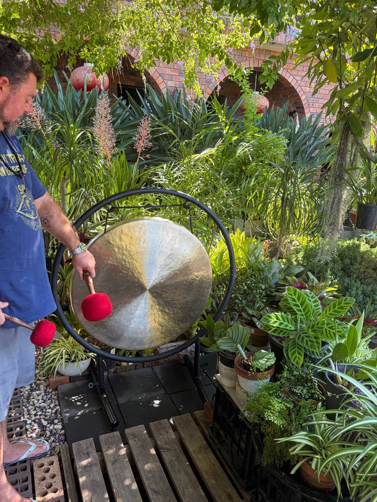
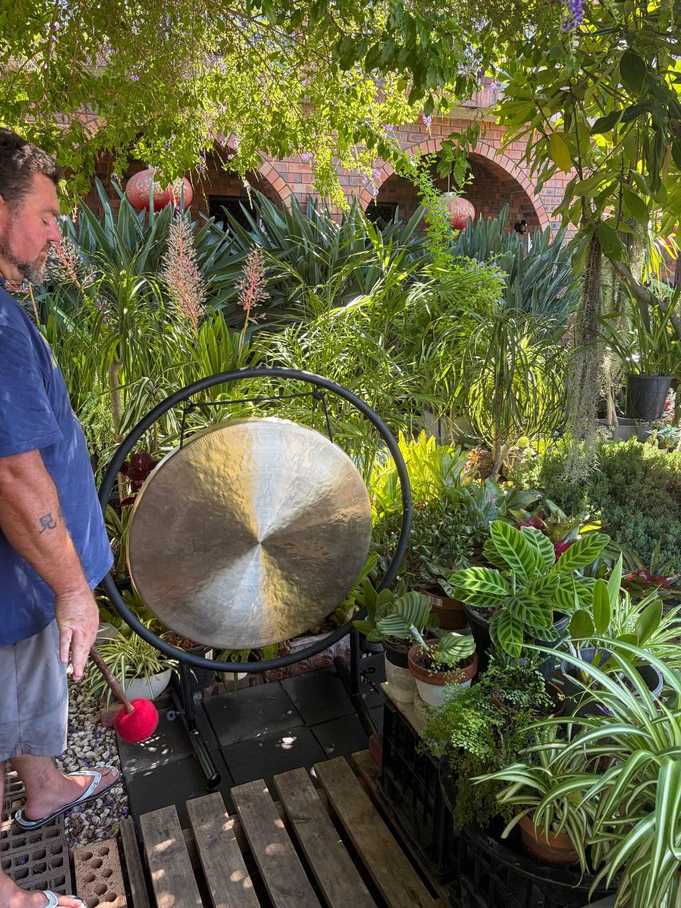
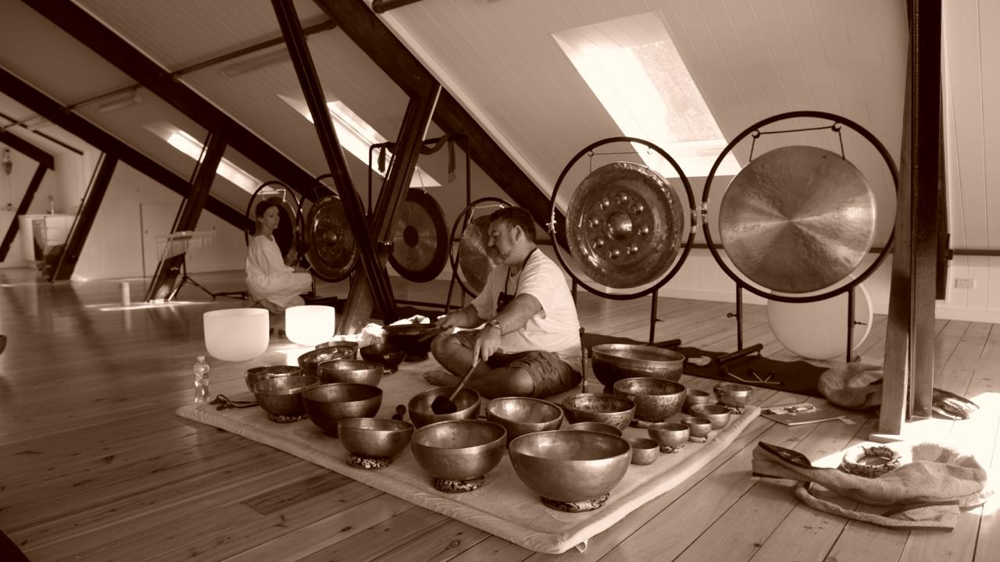
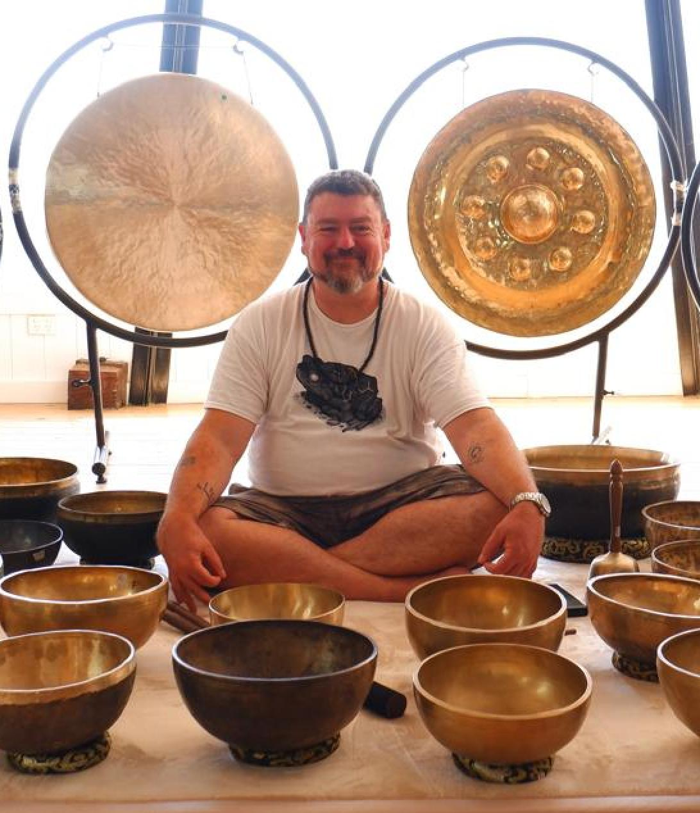
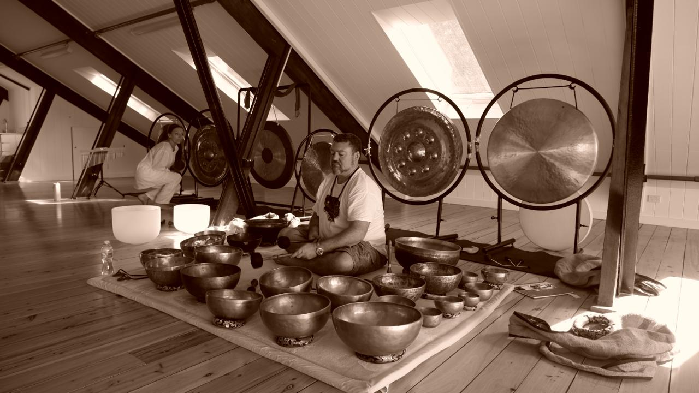
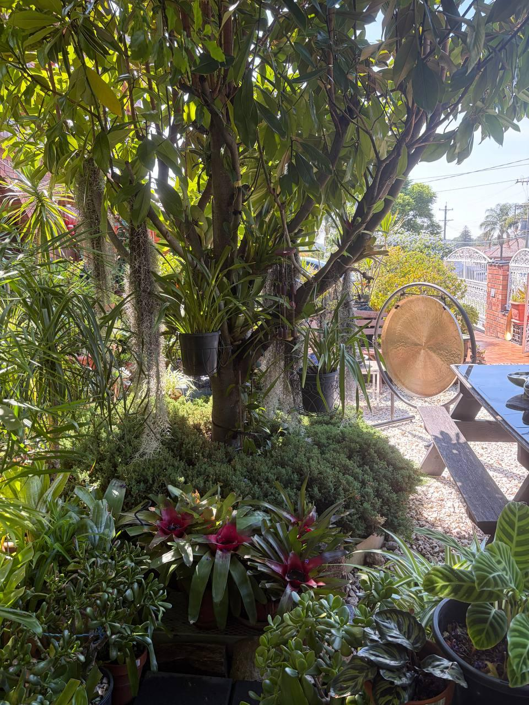
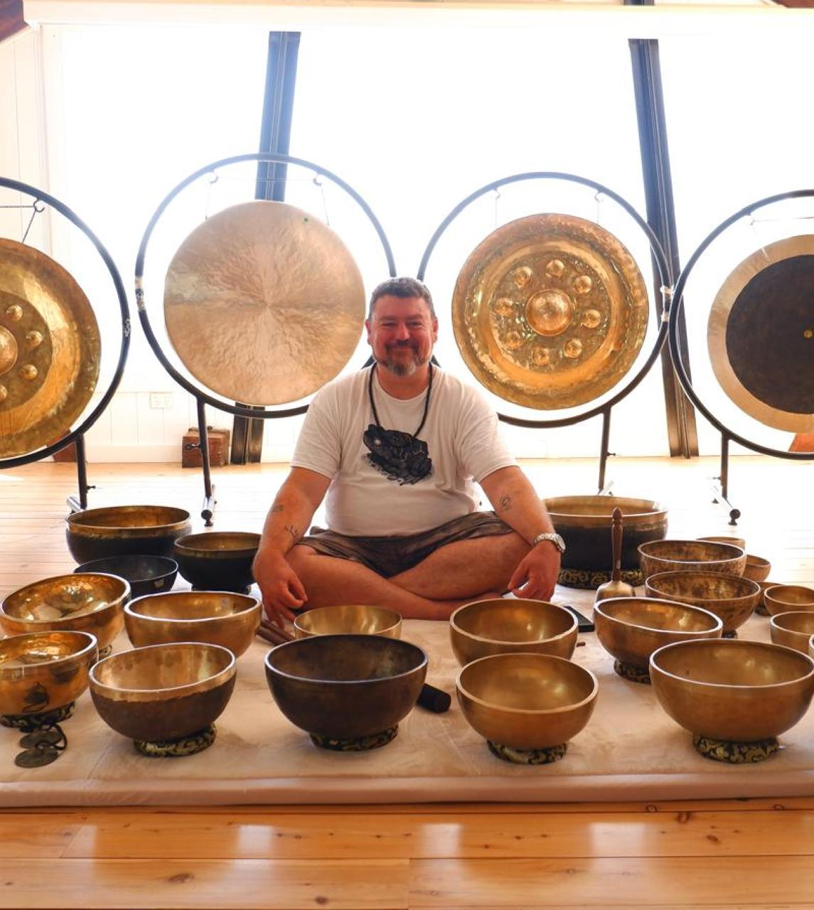

Luke Collins Sound Healing
Sound Healing Sessions in Sydney








Sound Healing Sessions in Sydney







Welcome to Luke Collins Sound Healing — a sacred space of sound and vibration.
I create a sacred space of sound to reduce noise. Using intentional sound to reduce noise may appear counterintuitive. But think of the noise level. How much messaging exists. How much data exists. We are drowning.
When our focus gets diluted, our energy drains. We become unbalanced.
For thousands of years, people in every culture used sound to recalibrate the mind, body, and energy. The particular flavour I have trained in is Himalayan sound medicine. I trained with Yogis in Nepal. I procured my instruments and will return to bring my art to Sydney and share it with you.
Learn More About LukeWorkplace sound healing for teams
Group sessions from $50 per person
One-on-one healing tailored to you
Full moon & seasonal ceremonies
Loading next event...
Sound healing uses instruments like Himalayan singing bowls and gongs to create vibrations that promote relaxation, reduce stress, and support wellbeing. You lie down and receive the healing sound waves.
Group sessions start at $50 per person ($80 for couples). Private sessions are $150 for 60 min or $200 for 90 min.
No experience needed. Sound baths are perfect for beginners. You simply lie down, close your eyes, and receive the sound.
Benefits include deep relaxation, stress reduction, improved sleep, reduced anxiety, pain relief, and emotional release.
Yes. We bring sound healing to workplaces across Sydney for team wellness days, lunch sessions, and corporate events. Contact us for packages.